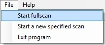

A fullscan scans the selected location, including all subfolders and all files regardless of type, size or date (except hidden and system files).
A fullscan can be started in three different ways:
-
From the menubar

Open the logfile and view its content
-
By not selecting any criterias on the settings screen
('Scan subfolders?' needs to be checked) - By rightclicking and selecting ''Run fullscan of this folder' in the treeview
CleanMyFolder then scans the location looking for files matching your criterias.
The criterias/options for scanning is:
- Scanning subfolders
- Filetypes/Extensions
- Size
- Date
This is mostly for security reasons and to avoid possible errors.
That being said, it's not recommended to delete or move files you are unsure of.
For example:
Moving or deleting folders/files in the System32 folder, not a good idea!
More about scan criterias.
<Current version 1.0.0.0>